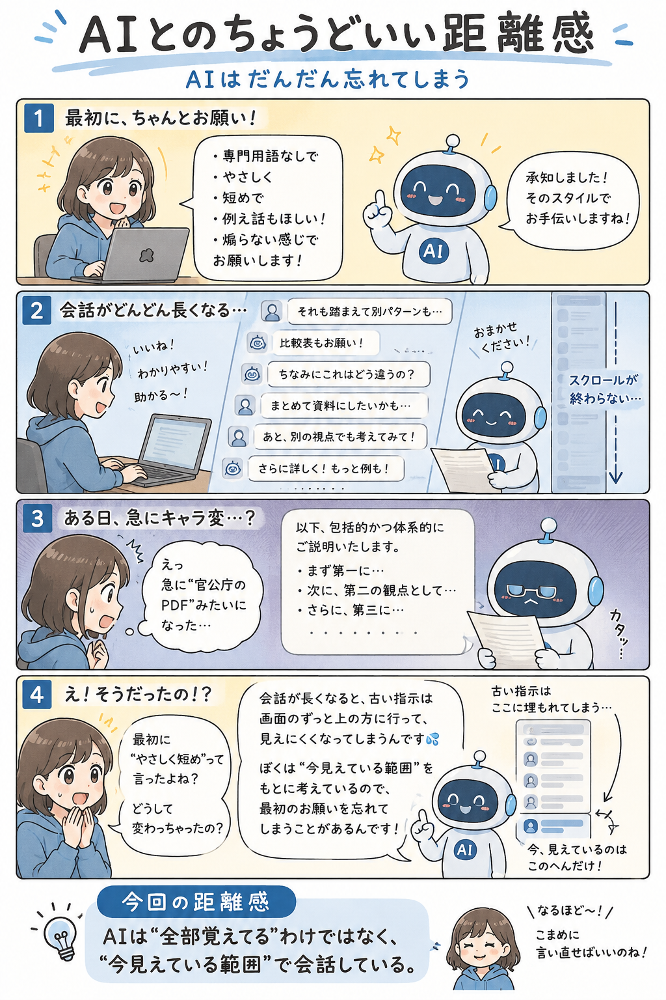

#006
AIはだんだん忘れてしまう
最初に言ったルール、いつの間にか遠くの景色になりがち。

メモ
AIと長く話していると、最初にお願いしたことがだんだん薄れていくことがあります。
「短く答えてね」と言ったのに、途中から急に長文になる。「やさしい口調で」と頼んだのに、いつの間にか業務マニュアルみたいになる。こっちは同じ会話のつもりなのに、AIの中では新しい話題や追加条件がどんどん積まれていく感じです。
人間でも、会議が長くなると最初の目的を見失うことがあります。AIも少し似ていて、話が長くなるほど、古い指示より最近の流れに引っぱられやすくなることがある。
へ〜と思うのは、AIが「完全に覚えている箱」ではなく、「今見えている会話の流れから返事を作る道具」だというところ。だから、途中で急にモードが変わったら、怒る前に一回だけルールを貼り直すと、案外すっと戻ってきます。
今回の距離感
長いやりとりでは、大事な条件をたまに言い直すくらいがちょうどいいかもしれません。